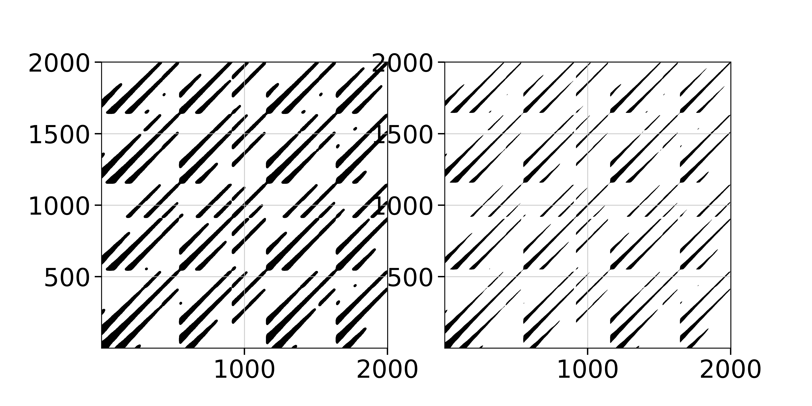
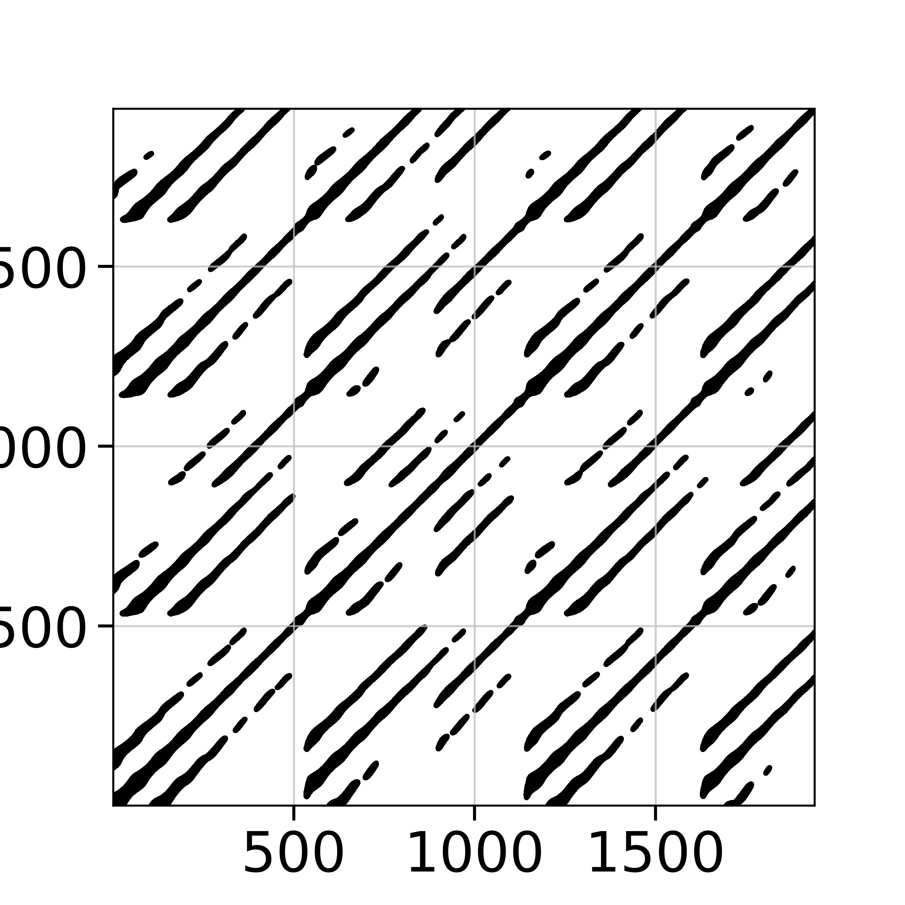
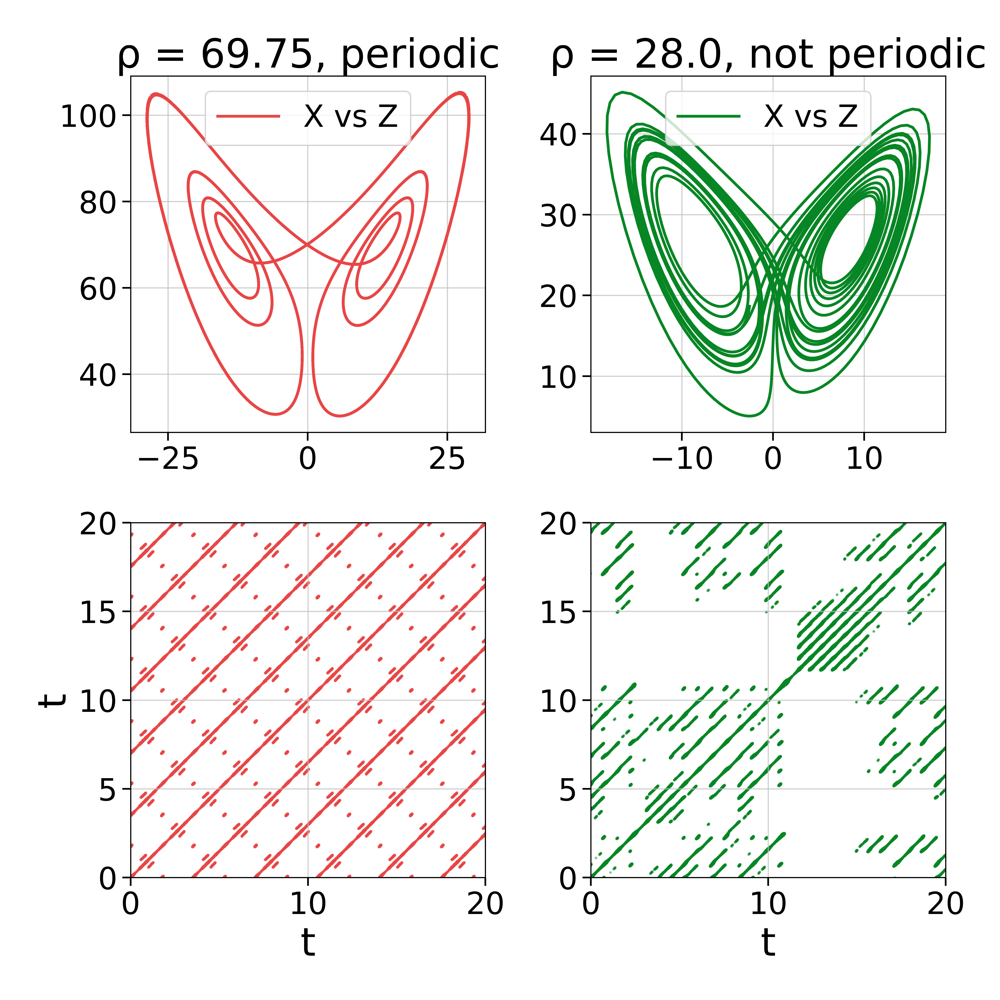

Recurrence Plots
Recurrence Matrices
A Recurrence plot (which refers to the plot of a matrix) is a way to quantify recurrences that occur in a trajectory. A recurrence happens when a trajectory visits the same neighborhood on the phase space that it was at some previous time.
The central structure used in these recurrences is the (cross-) recurrence matrix:
\[R[i, j] = \begin{cases} 1 \quad \text{if}\quad d(x[i], y[j]) \le \varepsilon\\ 0 \quad \text{else} \end{cases}\]
where $d(x[i], y[j])$ stands for the distance between trajectory $x$ at point $i$ and trajectory $y$ at point $j$. Both $x, y$ can be single timeseries, full trajectories or embedded timeseries (which are also trajectories).
If $x\equiv y$ then $R$ is called recurrence matrix, otherwise it is called cross-recurrence matrix. There is also the joint-recurrence variant, see below. With RecurrenceAnalysis you can use the following functions to access these matrices
RecurrenceAnalysis.RecurrenceMatrix — TypeRecurrenceMatrix(x, ε; kwargs...)
RecurrenceMatrix{FAN}(...)Create a recurrence matrix from trajectory x. Objects of type <:AbstractRecurrenceMatrix are displayed as a recurrenceplot.
Description
The recurrence matrix is a numeric representation of a "recurrence plot" [1, 2], in the form of a sparse square matrix of Boolean values.
x must be a Vector or an AbstractDataset (possibly representing an embedded phase space; see embed). If d(x[i], x[j]) ≤ ε (with d the distance function), then the cell (i, j) of the matrix will have a true value. The criteria to evaluate distances between data points are defined by the following keyword arguments:
scale=1: a function of the distance matrix (seedistancematrix), or a fixed number, used to scale the value ofε. Typical choices aremaximumormean, such that the thresholdεis defined as a ratio of the maximum or the mean distance between data points, respectively (usingmeanormaximumcalls specialized versions that are faster than the naive approach). Use1to keep the distances unscaled (default).fixedrate::Bool=false: a flag that indicates ifεshould be taken as a target fixed recurrence rate (seerecurrencerate). Iffixedrateis set totrue,εmust be a value between 0 and 1, andscaleis ignored.metric="euclidean": metric of the distances, eitherMetricor a string, as indistancematrix.parallel::Bool=false: whether to parallelize the computation of the recurrence matrix. This will split the computation of the matrix across multiple threads.
The parametrized constructor RecurrenceMatrix{NeighborNumber} creates the recurrence matrix with a fixed number of neighbors for each point in the phase space, i.e. the number of recurrences is the same for all columns of the recurrence matrix. In such case, ε is taken as the target fixed local recurrence rate, defined as a value between 0 and 1, and scale and fixedrate are ignored. This is often referred to in the literature as the method of "Fixed Amount of Nearest Neighbors" (or FAN for short); RecurrenceMatrix{FAN} can be used as a convenient alias for RecurrenceMatrix{NeighborNumber}.
If no parameter is specified, RecurrenceMatrix returns a RecurrenceMatrix{WithinRange} object, meaning that recurrences will be taken for pairs of data points whose distance is within the range determined by the input arguments. Note that while recurrence matrices with neighbors defined within a given range are always symmetric, those defined by a fixed amount of neighbors can be non-symmetric.
See also: CrossRecurrenceMatrix, JointRecurrenceMatrix and use recurrenceplot to turn the result of these functions into a plottable format.
References
[1] : N. Marwan et al., "Recurrence plots for the analysis of complex systems", Phys. Reports 438(5-6), 237-329 (2007). DOI:10.1016/j.physrep.2006.11.001
[2] : N. Marwan & C.L. Webber, "Mathematical and computational foundations of recurrence quantifications", in: Webber, C.L. & N. Marwan (eds.), Recurrence Quantification Analysis. Theory and Best Practices, Springer, pp. 3-43 (2015).
RecurrenceAnalysis.CrossRecurrenceMatrix — TypeCrossRecurrenceMatrix(x, y, ε; kwargs...)
CrossRecurrenceMatrix{FAN}(...)Create a cross recurrence matrix from trajectories x and y.
The cross recurrence matrix is a bivariate extension of the recurrence matrix. For the time series x, y, of length n and m, respectively, it is a sparse n×m matrix of Boolean values, such that if d(x[i], y[j]) ≤ ε, then the cell (i, j) of the matrix will have a true value.
Note that, unlike univariate recurrence matrices, cross recurrence matrices are not generally symmetric, regardless of the method used to make them.
See RecurrenceMatrix for details, references and keywords. See also: JointRecurrenceMatrix.
RecurrenceAnalysis.JointRecurrenceMatrix — TypeJointRecurrenceMatrix(x, y, ε; kwargs...)
JointRecurrenceMatrix{FAN}(...)Create a joint recurrence matrix from x and y.
The joint recurrence matrix considers the recurrences of the trajectories of x and y separately, and looks for points where both recur simultaneously. It is calculated by the element-wise multiplication of the recurrence matrices of x and y. If x and y are of different length, the recurrences are only calculated until the length of the shortest one.
See RecurrenceMatrix for details, references and keywords. See also: CrossRecurrenceMatrix.
JointRecurrenceMatrix(R1, R2; kwargs...)Create a joint recurrence matrix from given recurrence matrices R1, R2.
Simple Recurrence Plots
The recurrence matrices are internally stored as sparse matrices with boolean values. Typically in the literature one does not "see" the matrices themselves but instead a plot of them (hence "Recurrence Plots"). By default, when a Recurrence Matrix is created we "show" a mini plot of it which is a text-based scatterplot.
Here is an example recurrence plot/matrix of a full trajectory of the Roessler system:
using DynamicalSystems
ro = Systems.roessler(ones(3), a=0.15, b=0.20, c=10.0)
N = 2000; dt = 0.05
tr = trajectory(ro, N*dt; dt = dt, Ttr = 10.0)
R = RecurrenceMatrix(tr, 5.0; metric = "euclidean")
recurrenceplot(R; ascii = true) RecurrenceMatrix of size (2001, 2001) with 383597 entries
+------------------------------------------------------------+
| ..:'.::' .::'.:'..:' ..:'.:: .. .:'|
| .. .::'.:'' .:' .:'..''.::' . .::'.:' .:'..:' |
| .:':.:':::' . .:'.::'.::'.:' .:'.::'.::'.. ::'.::'.:' |
|:'.::'.::' :.:::.:' .. '.::'.::' :.:::.:' |
| ''' ''' ' .. .:''''' ..:'.. .:''''' ' .. ..:' ''' ..|
| .:'.::' .::'.:'.::' .::'.::' . .:''|
| .:' .:'..: ..:'..:'.:''.:' .:'..:'..: ..:'.::|
| ..:'.::'.::' .::'.::' :'.::' .::'.::'.:'' ' .::'.:'' |
|'.::'.::'.:' .:::.:'.. .:'' .:::.:::.:' .:':::' |
|:::::':::' '.::'.:'' ' ':::'.::' '.::'.. |
|'::' ::' .. .::'::' .. . .::'.::' .. .::'::' .|
| .:'.::' .::'.:' .:' ..:'.::' .::'|
| .::'.::'.: .:''.:'.::'.. .::'.:''.: . .:':.:|
| :'' :'.::'.: ::' ::'.:':.:'.. :' ::'.::'.:' ::'.::'.|
| . .:'..:' .:'.::'.:''.:' . ..:'.::' ..:'.::'|
| ..:'.::'.::' .::'.::'..'.::' ..:'.::'.:'' .::'.:'' |
|.::'.:::.:' :::.:'.::' ::' :::.:::.:' :':::'.:: |
|::::':::' .::'.::' . .::'.::' .::'.:'' |
| '' '' '.:' .:'' '' .:'..: .:'' ''' .:' .:'' '' .:|
| .:'..:'. .::'.:''.:'.. .:'.::'. . .::'.|
| .::'.::'.:' .:''.:'.::'.:' .::'.:':.:'. .:'..:'|
|. .:':.:'..:' '.::'.::' ''.:' ..:':::'..'' '.::'.::' |
|:::'.::'.:'' :::.::'.. ::' ::'.::'.:' :::.:'' |
|::::::::' .::'.::' .::::::' .::'.:: |
|::::::'.. ::.::' :::::'. ::.:' |
+------------------------------------------------------------+ typeof(R)RecurrenceMatrix{WithinRange}summary(R)"RecurrenceMatrix of size (2001, 2001) with 383597 entries"
The above simple plotting functionality is possible through the package UnicodePlots. The following function creates the plot:
RecurrenceAnalysis.recurrenceplot — Functionrecurrenceplot([io,] R; minh = 25, maxh = 0.5, ascii, kwargs...) -> uCreate a text-based scatterplot representation of a recurrence matrix R to be displayed in io (by default stdout) using UnicodePlots. The matrix spans at minimum minh rows and at maximum maxh*displaysize(io)[1] (i.e. by default half the display). As we always try to plot in equal aspect ratio, if the width of the plot is even less, the minimum height is dictated by the width.
The keyword ascii::Bool can ensure that all elements of the plot are ASCII characters (true) or Unicode (false).
The rest of the kwargs are propagated into UnicodePlots.scatterplot.
Notice that the accuracy of this function drops drastically for matrices whose size is significantly bigger than the width and height of the display (assuming each index of the matrix is one character).
Here is the same plot but using Unicode Braille characters
recurrenceplot(R; ascii = false) RecurrenceMatrix of size (2001, 2001) with 383597 entries
┌────────────────────────────────────────────────────────────┐
│⠀⠀⠀⠀⠀⠀⠀⠀⠀⢀⣠⠞⠃⢀⣴⠟⠁⠀⠀⠀⠀⠀⠀⠀⢀⣴⠟⠁⣠⡶⠋⢀⣤⠞⠁⠀⠀⠀⠀⠀⠀⠀⢀⣤⠞⠁⣀⡴⠟⠀⠀⠀⠀⢀⣤⠀⠀⣀⡴⠛│
│⠀⠀⠀⢀⡀⠀⠀⣀⣴⠟⠁⣠⡶⠋⠁⠀⠀⠀⣀⡴⠋⠀⣠⡾⠋⢀⣠⠘⠉⣀⡴⠟⠁⠀⠀⠀⢀⠀⠀⠀⣠⡶⠟⠁⣠⡾⠋⠀⠀⠀⠀⣠⡶⠋⢀⣠⡾⠋⠀⠀│
│⠀⣠⡶⠛⢁⣠⡾⠋⢁⣴⠾⠋⠀⡀⠀⠀⢠⡾⠋⢀⣴⠟⠋⣀⡴⠟⠁⢠⡾⠋⠀⠀⠀⠀⢠⡾⠋⢀⣴⡾⠋⢀⣴⠞⠉⢀⡀⠀⠀⣴⡾⠋⣀⣴⠟⠉⣀⡴⠋⠀│
│⡿⠋⣠⣴⡿⠋⣠⣶⠟⠁⠀⠀⠀⠀⠀⠀⢈⣠⣾⠟⢁⣠⡾⠋⠀⠀⠀⠀⢀⡀⠀⠀⠀⠀⠈⣠⣶⠟⠋⣠⣾⠟⠁⠀⠀⠀⠀⠀⠀⢁⣤⡾⠟⢁⣠⡾⠋⠀⠀⠀│
│⠀⠚⠛⠁⠀⠚⠛⠁⠀⠒⠀⣠⡄⠀⠀⣠⠞⠛⠁⠐⠛⠋⠀⠀⠀⢀⣠⠞⠋⢀⡄⠀⠀⣠⡼⠛⠁⠐⠛⠋⠀⠀⠒⠀⣠⡄⠀⢀⣤⠟⠋⠀⠐⠛⠉⠀⠀⠀⢀⣤│
│⠀⠀⠀⠀⠀⠀⠀⠀⠀⣤⠞⠉⢀⣴⠟⠁⠀⠀⠀⠀⠀⠀⠀⢀⣴⠟⠁⣠⡾⠋⢀⣴⠞⠉⠀⠀⠀⠀⠀⠀⠀⢀⣴⠞⠁⣀⡴⠟⠁⠀⠀⠀⠀⡀⠀⠀⣠⡴⠛⠁│
│⠀⠀⠀⠀⠀⠀⣀⡴⠂⠀⣠⡾⠋⢀⣠⠞⠀⠀⠀⠀⢀⣠⡾⠋⢀⣤⠞⠁⣠⡴⠛⠁⣠⡶⠃⠀⠀⠀⠀⣠⡴⠋⢀⣠⡾⠋⢀⣤⠞⠀⠀⠀⠀⢀⣤⠾⠋⢀⣴⠞│
│⠀⠀⠀⢀⣤⡾⠋⢀⣴⠟⠋⢀⡴⠟⠁⠀⠀⠀⣀⣴⠟⠁⣠⡴⠟⠁⠀⠸⠋⢀⣴⠞⠁⠀⠀⠀⢀⣴⠾⠋⣀⣴⠟⠁⣀⡴⠋⠁⠀⠒⠀⣠⣴⠟⠁⣠⡶⠋⠁⠀│
│⠃⣠⣶⠟⠉⣠⣾⠟⠁⣠⡾⠋⠀⠀⠀⠀⣠⣾⠟⢁⣤⡾⠋⢀⡀⠀⠀⢠⡴⠋⠁⠀⠀⠀⢠⣶⠟⢁⣠⡾⠟⢁⣠⠾⠋⠀⠀⠀⠀⣤⡾⠛⢁⣴⡾⠋⠀⠀⠀⠀│
│⣿⠟⣁⣴⡿⠋⣁⣴⠟⠋⠀⠀⠀⠀⠀⠀⠉⣠⣶⠿⠋⣠⡴⠛⠁⠀⠀⠈⠀⠀⠀⠀⠀⠀⠈⣡⣴⡿⠋⣠⣴⠟⠁⠀⠀⠀⠀⠀⠀⠉⣠⣾⠟⠁⣠⡄⠀⠀⠀⠀│
│⠁⠾⠿⠋⠀⠾⠟⠁⠀⠀⠀⢀⡀⠀⠀⣠⡾⠟⠁⠰⠾⠋⠀⠀⠀⠀⣠⡄⠀⢀⠀⠀⠀⣀⡼⠿⠋⠠⠾⠟⠁⠀⠀⠀⣀⡀⠀⠀⣠⠿⠟⠁⠰⠞⠋⠀⠀⠀⠀⣠│
│⠀⠀⠀⠀⠀⠀⠀⠀⠀⣠⡾⠋⢀⣴⠞⠉⠀⠀⠀⠀⠀⠀⠀⢀⣴⠞⠁⢠⡴⠋⠀⣠⡾⠋⠀⠀⠀⠀⠀⠀⠀⢀⣠⠞⠋⢀⣴⠟⠁⠀⠀⠀⠀⠀⠀⠀⢀⣴⠟⠁│
│⠀⠀⠀⠀⠀⠀⢀⣴⠞⠁⣠⡴⠟⠁⣠⠶⠀⠀⠀⠀⠀⣠⡴⠋⠁⣠⡾⠋⢀⣴⠟⠁⣀⡤⠀⠀⠀⠀⠀⣀⣴⠟⠁⣠⡶⠋⠁⣠⠖⠀⢀⠀⠀⠀⣠⡾⠋⢁⣠⠞│
│⠀⠀⠀⠀⠀⠶⠋⠁⠀⠾⠋⢀⣴⠞⠁⣠⡴⠀⠀⠰⠾⠋⠀⠰⠟⠁⣠⡼⠛⢁⣤⠞⠋⢀⡄⠀⠀⠀⠾⠋⠀⠰⠾⠋⣀⡴⠟⠁⣠⠾⠋⠀⠰⠟⠋⢀⡰⠟⠁⣠│
│⠀⠀⠀⠀⠀⢀⠀⠀⠀⣠⡾⠋⢀⣤⠞⠋⠀⠀⠀⠀⣠⡶⠃⢀⣴⠞⠋⢠⡴⠛⠁⣠⡾⠋⠀⠀⠀⠀⣀⠀⠀⢀⣠⡾⠋⢀⣴⠞⠁⠀⠀⠀⢀⣠⠞⠋⢀⣴⠞⠁│
│⠀⠀⢀⣠⡾⠋⢀⣴⠟⠋⢀⣴⠟⠁⠀⠀⠀⣀⣴⠟⠁⣠⣴⠟⠁⣠⠄⠈⢀⣴⠞⠉⠀⠀⠀⢀⣤⠞⠉⣀⣴⠟⠁⣠⡴⠛⠁⠀⠀⠀⣀⣴⠟⠁⣠⡶⠛⠁⠀⠀│
│⣠⣴⠟⠁⣠⣾⠟⢁⣠⡾⠋⠀⠀⠀⠀⠀⠸⠟⢁⣤⡾⠋⢀⣴⠞⠁⠀⠰⠟⠁⠀⠀⠀⠀⠰⠟⢁⣠⡾⠟⢁⣤⡾⠋⠀⠀⠀⠀⠀⠾⠋⢁⣴⡾⠋⢀⣴⠆⠀⠀│
│⠟⣁⣴⡿⠛⣁⣴⠿⠋⠀⠀⠀⠀⠀⠀⠀⢠⣶⡿⠋⣠⣶⠟⠁⠀⠀⠀⢀⠀⠀⠀⠀⠀⠀⢠⣴⡿⠋⣠⣴⠟⠉⠀⠀⠀⠀⠀⠀⠀⣠⣶⠟⠉⣠⡾⠋⠁⠀⠀⠀│
│⠀⠉⠉⠀⠀⠉⠁⠀⠀⠁⢀⡴⠂⠀⣠⡶⠋⠁⠀⠈⠉⠀⠀⠀⠀⣠⡶⠋⢀⣤⠆⠀⣀⡴⠋⠉⠀⠈⠉⠁⠀⠀⠀⣀⡴⠂⠀⣠⡶⠋⠁⠀⠈⠉⠀⠀⠀⠀⣠⠶│
│⠀⠀⠀⠀⠀⠀⠀⠀⣠⠾⠋⢀⣤⠞⠋⢀⠀⠀⠀⠀⠀⠀⢀⣴⠞⠉⣀⡰⠋⠁⣠⡾⠋⢀⡀⠀⠀⠀⠀⠀⠀⣠⠾⠋⢀⣴⠟⠁⢀⠀⠀⠀⠀⠄⠀⢀⣴⠟⠁⣀│
│⠀⠀⠀⠀⠀⢀⣴⠞⠁⣠⡴⠟⠁⣠⡶⠋⠀⠀⠀⠀⣠⡶⠛⠁⣠⡾⠋⢀⣴⠟⠁⣀⡴⠋⠀⠀⠀⠀⣀⣴⠟⠁⣠⡶⠋⢁⣠⠾⠋⢀⠀⠀⠀⣠⡾⠋⢀⣠⠾⠋│
│⡤⠀⠀⣠⡾⠛⢁⣤⡾⠋⢀⣤⠞⠁⠀⠀⠈⢀⣴⡾⠋⢀⣴⠟⠉⠀⠀⠈⠁⣠⠾⠋⠀⠀⠀⢀⣠⡾⠋⢁⣴⡾⠋⢀⡤⠈⠁⠀⠀⠉⢀⣴⠿⠋⣀⣴⠟⠁⠀⠀│
│⣁⣴⡿⠋⣠⣴⠟⠋⣠⡴⠛⠁⠀⠀⠀⠀⣼⠟⢉⣠⡾⠟⠁⣠⠄⠀⠀⢰⠟⠁⠀⠀⠀⠀⢰⡿⠋⣠⣶⠟⠁⣠⡶⠋⠀⠀⠀⠀⠀⣾⠟⢁⣠⡾⠋⠁⠀⠀⠀⠀│
│⡿⢋⣴⣾⠟⢁⣴⡾⠋⠀⠀⠀⠀⠀⠀⠀⢠⣴⡿⠋⣀⣴⠟⠁⠀⠀⠀⠀⠀⠀⠀⠀⠀⠀⢀⣴⣿⠟⣁⣴⡿⠋⠀⠀⠀⠀⠀⠀⠀⣠⣴⡿⠋⣀⣴⠆⠀⠀⠀⠀│
│⣾⣿⢟⣡⣾⡿⠋⣀⡀⠀⠀⠀⠀⠀⠀⠀⠻⢋⣤⣾⠟⠁⠀⠀⠀⠀⠀⠀⠀⠀⠀⠀⠀⠀⠸⢋⣥⣾⠟⠉⣀⠀⠀⠀⠀⠀⠀⠀⠀⠟⢋⣤⡾⠋⠀⠀⠀⠀⠀⠀│
└────────────────────────────────────────────────────────────┘ As you can see, the Unicode based plotting doesn't display nicely everywhere. It does display perfectly in e.g. Juno, which is where it is the default printing type. Here is how it looks like in a dark background:

Advanced Recurrence Plots
A text-based plot is cool, fast and simple. But often one needs the full resolution offered by the data of a recurrence matrix.
There are two more ways to plot a recurrence matrix using RecurrenceAnalysis:
RecurrenceAnalysis.coordinates — Functioncoordinates(R) -> xs, ysReturn the coordinates of the recurrence points of R (in indices).
RecurrenceAnalysis.grayscale — Functiongrayscale(R [, bwcode]; width::Int, height::Int, exactsize=false)Transform the recurrence matrix R into a full matrix suitable for plotting as a grayscale image. By default it returns a matrix with the same size as R, but switched axes, containing "black" values in the cells that represent recurrent points, and "white" values in the empty cells and interpolating in-between for cases with both recurrent and empty cells, see below.
The numeric codes for black and white are given in a 2-element tuple as a second optional argument. Its default value is (0.0, 1.0), i.e. black is coded as 0.0 (no brightness) and white as 1.0 (full brightness). The type of the elements in the tuple defines the type of the returned matrix. This must be taken into account if, for instance, the image is coded as a matrix of integers corresponding to a grayscale; in such case the black and white codes must be given as numbers of the required integer type.
The keyword arguments width and height can be given to define a custom size of the image. If only one dimension is given, the other is automatically calculated. If both dimensions are given, by default they are adjusted to keep an aspect proportional to the original matrix, such that the returned matrix fits into a matrix of the given dimensions. This automatic adjustment can be disabled by passing the keyword argument exactsize=true.
If the image has different dimensions than R, the cells of R are distributed in a grid with the size of the image, and a gray level between white and black is calculated for each element of the grid, proportional to the number of recurrent points contained in it. The levels of gray are coded as numbers of the same type as the black and white codes.
It is advised to use width, height arguments for large matrices otherwise plots using functions like e.g. imshow could be misleading.
For example, here is the representation of the above R from the Roessler system using both plotting approaches:
using PyPlot
figure(figsize = (10,5))
ax = subplot(121)
xs, ys = coordinates(R)
scatter(xs, ys, color = "k", s = 1)
xlim(1, size(R)[1]); ylim(1, size(R)[2]);
ax.set_aspect("equal")
subplot(122)
Rg = grayscale(R)
imshow(Rg, cmap = "binary_r", extent = (1, size(R)[1], 1, size(R)[2]))
and here is exactly the same process, but using the embedded trajectory instead
y = tr[:, 2]
τ = estimate_delay(y, "mi_min")
m = embed(y, 3, τ)
R = RecurrenceMatrix(m, 5.0; metric = "euclidean")
figure(figsize = (5,5))
xs, ys = coordinates(R)
scatter(xs, ys, color = "k", s = 1)
xlim(1, size(R)[1]); ylim(1, size(R)[2]);
which justifies why recurrence plots are so fitting to be used in embedded timeseries.
It is easy when using grayscale to not change the width/height parameters. These are however very important when the matrix size exceeds the display size! Most plotting libraries may resample arbitrarily or simply limit the displayed pixels, so one needs to be extra careful.
Besides graphical problems there are also other potential pitfalls dealing with the conceptual understanding and use of recurrence plots. All of these are summarized in the following paper which we suggest users to take a look at:
N. Marwan, How to avoid potential pitfalls in recurrence plot based data analysis, Int. J. of Bifurcations and Chaos (arXiv).
Example
In the following we will plot recurrence plots of the Lorenz system for a periodic and chaotic regime (using scatter plot).
lor = Systems.lorenz()
figure(figsize = (10,10))
for (i, ρ) in enumerate((69.75, 28.0))
set_parameter!(lor, 2, ρ)
t, dt = 20.0, 0.01
tr = trajectory(lor, t; dt = dt, Ttr = 2000.0)
tvec = 0:dt:t
subplot(2,2, i)
plot(tr[:, 1], tr[:, 3], color = "C$(i+1)", label = "X vs Z")
title("ρ = $ρ, " * (i != 1 ? "not periodic" : "periodic")); legend()
ε = i == 1 ? 5.0 : 3.0
R = RecurrenceMatrix(tr, ε)
subplot(2,2,i+2)
x, y = coordinates(R)
scatter(tvec[x], tvec[y], s = 1, alpha = 0.2, color = "C$(i+1)")
xlim(0, t); ylim(0, t); gca().set_aspect("equal")
xlabel("t"); i == 1 && ylabel("t");
end
PyPlot.tight_layout()┌ Warning: Assignment to `dt` in soft scope is ambiguous because a global variable by the same name exists: `dt` will be treated as a new local. Disambiguate by using `local dt` to suppress this warning or `global dt` to assign to the existing global variable. └ @ none:4 ┌ Warning: Assignment to `tr` in soft scope is ambiguous because a global variable by the same name exists: `tr` will be treated as a new local. Disambiguate by using `local tr` to suppress this warning or `global tr` to assign to the existing global variable. └ @ none:5 ┌ Warning: Assignment to `R` in soft scope is ambiguous because a global variable by the same name exists: `R` will be treated as a new local. Disambiguate by using `local R` to suppress this warning or `global R` to assign to the existing global variable. └ @ none:13 ┌ Warning: Assignment to `y` in soft scope is ambiguous because a global variable by the same name exists: `y` will be treated as a new local. Disambiguate by using `local y` to suppress this warning or `global y` to assign to the existing global variable. └ @ none:16

On the left we see long (infinite) diagonals repeated over and over for different times. This is the case for periodic systems as they visit exactly the same area on the phase space again and again. The distance between the offset diagonals also coincides with the periodicity of the system, which is around t ≈ 4.
On the right we see a structure typical of chaotic motion on a strange attractor such as the one of the Lorenz system: the orbit visits neighborhoods of previous points but then quickly diverges again. This results in many small diagonal lines.
Distances
The distance function used in RecurrenceMatrix and co. can be specified either as a string or as any Metric instance from Distances. In addition, the following function returns a matrix with the cross-distances across all points in one or two trajectories:
RecurrenceAnalysis.distancematrix — Functiondistancematrix(x [, y = x], metric = "euclidean")Create a matrix with the distances between each pair of points of the time series x and y using metric.
The time series x and y can be AbstractDatasets or vectors or matrices with data points in rows. The data point dimensions (or number of columns) must be the same for x and y. The returned value is a n×m matrix, with n being the length (or number of rows) of x, and m the length of y.
The metric can be identified by a string, or any of the Metrics defined in the Distances package. The list of strings available to define the metric are:
"max"or"inf"for the maximum or L∞ norm (Chebyshev()in theDistancespackage)."euclidean"for the L2 or Euclidean norm, used by default (Euclidean()inDistances)."manhattan","cityblock","taxicab"or"min"for the Manhattan or L1 norm (Cityblock()inDistances).